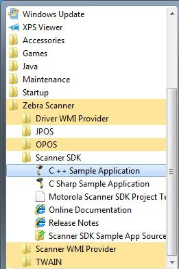

Overview
This chapter provides information about testing and evaluation of the Zebra Scanner SDK's software components using the test utilities provided in the SDK.
NOTE For the attributes (parameters) applicable to a specific scanner, refer to the Product Reference Guide . Product Reference Guides may also contain an appendix listing the generic non-parameter attributes supported on most Zebra scanners.
Test Utilities Provided in the SDK
The Zebra Scanner SDK includes the following test utilities:
- Zebra Scanner SDK C++ Sample Application
- Zebra Scanner SDK C# .Net Sample Application
Each test utility demonstrates the main functionalities of the SDK. You can gain an understanding of the Zebra Scanner SDK using these test utilities. This section also describes how to use the test utilities' functionality.
NOTE You may need to install the Microsoft®.Net Framework v2.0 or later to execute C# .Net Sample application. If so, Microsoft detects and informs the user of this requirement.
The Zebra Scanner SDK Test Utilities support the following functionality:
- Discovery of asset tracking information
- Scan a bar code
- Capture Image and Video
- Capture documents with Intelligent Document Capture (IDC)
- Attribute query and setting
- Host Variant switching
- Firmware upgrade.
Scanner SDK C++ Sample Application
The Scanner SDK C++ Sample Application enables you to simulate an application that communicates with the Scanner SDK. The utility demonstrates the functionality of the SDK. It includes C++ source code and its solution and project files for further reference.
 Figure 1 C++ Sample Application
Figure 1 C++ Sample Application
Scanner SDK C#.Net Sample Application
The Scanner SDK C#.Net Sample Application enables you to simulate an application that communicates with the Scanner SDK. The utility demonstrates the functionality of the SDK. It includes C#.Net source code and its solution and project files for further reference.
Table 1 Test Utility Buttons and Fields by Tab Screen
| Button for Field | Description |
|---|---|
| Discover Scanners | Invokes Open, GetScanners methods and register for all the events. |
| Select Scanner | Select the scanner you want to invoke the command |
| Connected Scanners | List all the connected scanners regardless of the mode |
| Pull Trigger | Soft Pull Trigger the scanner for Bar code, Image and Video actions |
| Release Trigger | Soft Release Trigger the scanner for Bar code, Image and Video actions |
| Bar Code Tab | |
| Flush Macro PDF | Flush Macro PDF bar code buffer |
| Abort Macro PDF | Abort Macro PDF continues read |
| Clear | Clear the Bar code data area |
| Decoded Bar Code | Display label value of the scanned bar code |
| Symbology | Display the symbology of scanned bar code |
| Enable Emulation | Enable Simulated HID Keyboard Output |
| Image/Video Tab | |
| Image | Invoke image capture mode |
| Video | Invoke video capture mode |
| Abort Transfer | Abort Image Transfer on serial scanners |
| Image Type | Select JPG, TIFF or BMP image type |
| Enable Video View Finder | Enable the view finder in image mode |
| Save Image | Save the captured image |
| IDC Tab | |
| Get | Display value of the IDC-related parameter in the drop down menu |
| Set | Temporarily set the value of the IDC-related parameter in the drop down menu |
| Store | Permanently store the value of the IDC-related parameter in the drop down menu |
| Value | Field to display, and enter an IDC-related parameter value |
| Decode Data | Value of linked or anchor bar code data |
| Symbology | Symbology of linked or anchor bar code |
| Use HID | Specify HID channel for data transmission (instead of the default BULK channel) |
| Clear | Clears all the fields |
| Scanner Actions Tab | |
| Enable/Disable Scanner | Enable/Disable the scanner for data/image/video capture initiation |
| Aim | Switch on and off Aim control of the scanner |
| Beeper | Beep the peeper of the scanner |
| Reboot Scanner | Reboot the scanner |
| LED | Light the LED(s) on the scanner |
| Switch Host Variant | Switch the scanner host type from current type to desired type; the user has the option to select silent feature and variant change persistent and non-persistent. |
| RSM Tab | |
| Get All IDs | Get all supported attribute IDs from the selected scanner |
| Get Value | Select one or more attribute IDs and get the value for them |
| Next Value | Get the next attributes value given the current attribute number |
| Store Value | Store value(s) for selected attribute(s) |
| Set Value | Set value(s) for selected attribute(s) |
| Select All | Select all the attribute IDs at the RSM data viewer |
| Clear All | Clear all the attribute data at the RSM data viewer |
| Clear All Values | Clear all the attribute values at the RSM data viewer (C# only) |
| Clear Value | Clear a selected attribute value at the RSM data viewer (C# only) |
| Advanced Tab | |
| Firmware Update Options | Updated firmware and launch the new firmware on the scanner |
| Browse | Browse the Firmware file (*.DAT) or Plug-in file (*.SCNPLG) |
| Update | Initiate firmware update process |
| Abort | If you want to abort firmware update process |
| Launch | Once firmware update finishes launch the new firmware in the scanner |
| Claim Scanner | Exclusively claim and declaim the scanner for this application |
| Miscellaneous Tab | |
| SDK Version | Get the scanner SDK version |
| Get Device Topology | Get the scanner device topology, this is useful to get an idea of scanner topology for cascaded scanners |
| Serial Interface Settings | Serial interface settings for serial scanners |
| Scale Tab | |
| Read Weight | Read the weight of the item on the scale |
| Zero Scale | Zero the scale |
| Reset Scale | Reset the scale |
| Weight Measured | Weight of the item (Pounds or Kilograms) |
| Weight Unit | Weight mode of the scale (English or Metric) |
| Logs Tab | |
| Event Log | Command and event log, logs commands initiated |
| XML Log | Displays Output of each function if an output exists |
| Clear Event Log | Clear command and event log area |
| Clear XML Log | Clear XML log area |
NOTE The SDK Sample Application in the latest release of the Scanner SDK for Windows implements a ScanToConnect tab. The ScanToConnect feature enables a Zebra cordless Bluetooth scanner to pair directly to a PC/tablet by scanning an on-screen bar code, replacing the need for a paper pairing label. This paperless pairing solution wirelessly connects the scanner directly to the host, without the need for a cradle.
NOTE Sample source code for the ScanToConnect tab is included with installation of the SDK Sample Application. For further information on this functionality, contact the Zebra Technologies Global Customer Support Center at: www.zebra.com/support
How to Verify Scanner SDK Functionality
This section guides you through a series of use cases and test cases of the Zebra Scanner SDK and its functionality.
See Basic Installation Verification for more information
Scanner Discovery / Asset Tracking Information / Validating Successful SDK Installation
-
Connect a Zebra USB scanner(s) to the computer and put the scanner into USB OPOS (Hand Held) or USB SNAPI mode by scanning one of the bar codes below.
-
Launch the Zebra Scanner SDK Sample Utility by selecting Start > All Programs > Zebra Scanner > Scanner SDK > Scanner SDK Sample Application (C++)"or Scanner SDK Sample Application (C#.Net).
Figure 3 Start Scanner SDK Sample Application (C++) or C# .Net - Click Discover Scanners to display all the connected scanners in the Connected Scanners area
-
Clicking Discover Scanners in the sample application executes an
Openfor all types of scanners and anExecCommandwith theREGISTER_FOR_EVENTSmethod using the following XML and aGetScannersAPI call:<inArgs> <cmdArgs> <arg-int>6</arg-int> <arg-int>1,2,4,8,16,32</arg-int> </cmdArgs> </inArgs>
NOTE The first <inArgs> tag in the XML is filled with the number of events you want to register. In the example above, number of event it wants to register is "6". The second
Table 2 Supported Event IDs
| Event Name | Event ID |
|---|---|
| SUBSCRIBE_BARCODE | 1 |
| SUBSCRIBE_IMAGE | 2 |
| SUBSCRIBE_VIDEO | 4 |
| SUBSCRIBE_RMD | 8 |
| SUBSCRIBE_PNP | 16 |
| SUBSCRIBE_OTHER | 32 |
-
The GetScanners API call produces XML code as follows:
<?xml version="1.0" encoding="UTF-8" ?> <scanners> <scanner type="SNAPI"> <scannerID>1</scannerID> <serialnumber>7116000501003</serialnumber> <GUID>A2E647DED2163545B18BCEBD0A2A133D</GUID> <VID>1504</VID> <PID>6400</PID> <modelnumber>DS670-SR20001ZZR</modelnumber> <DoM>27APR07</DoM> <firmware>NBRPUAAC</firmware> </scanner> </scanners>Table 3 Data Representation of the GetScanners Output in this Example
Scanner Information Value Description Scanner ID 1 A unique ID assigned for a scanner from the SDK; any scanner specific method execute from ExecCommand should point to a scanner ID Serial Number 7116000501003 Device serial number printed on the label Model Number DS670-SR20001ZZR Device model number Date of Manufacture 27APR07 Device date of manufacture Firmware Version NBRPUAAC Current firmware version H/W GUID A2E647DED2163545B18BCEBD0A2A133D Hardware unique ID
-
The XML consists of the scanner type, scanner ID, serial number, GUID, VID, PID, model number, date of manufacture and firmware version of the connected scanners.
All discovered scanners are presented in the Connected Scanners window by processing the XML received from the GetScanners command along with their asset tracking information returned by querying device parameters. The detection of scanners indicates the SDK was installed successfully. Click Discover Scanners to display the connected scanners.
 Figure 4 Connected Scanners
Figure 4 Connected Scanners
Bar Code Scanning
- Connect and discover a scanner (see Scanner Discovery / Asset Tracking Information / Validating Successful SDK Installation).
-
Scan a bar code and its decoded data is returned in the form of XML data and displayed on the Barcode tab. To illustrate the typical implementation, the sample application also displays only the "Bar code" data below the XML data.
 Figure 5 Decoded Bar Code Data
Figure 5 Decoded Bar Code Data
Example
-
Scan the following sample bar code after discovering the scanner in the sample application (see Scanner Discovery / Asset Tracking Information / Validating Successful SDK Installation).

-
The following XML is returned:
<?xml version="1.0" encoding="UTF-8" ?> <outArgs> <scannerID>2</scannerID> <arg-xml> <scandata> <modelnumber>DS670-SR20001ZZR</modelnumber> <serialnumber>7116000501003</serialnumber> <GUID>A2E647DED2163545B18BCEBD0A2A133D</GUID> <datatype>8</datatype> <datalabel>0x30 0x31 0x32 0x33 0x34 0x35 0x36 0x37 0x38 0x39 0x31 0x32</datalabel> <rawdata>0x30 0x31 0x32 0x33 0x34 0x35 0x36 0x37 0x38 0x39 0x31 0x32</rawdata> </scandata> </arg-xml> </outArgs> - By processing the XML above, the sample application displays the decoded bar code in the Decoded Bar code text box and the symbology in the Symbology text box.
Language/Locale Details
- Toggle the Enable Emulation check box to enable/disable Simulated HID Keyboard Output.
-
Select the language locale from the drop down menu.
The sample application first retrieves the current config.xml file (see Simulated HID Keyboard Output by executing an ExecCommand API call with the KEYBOARD_EMULATOR_GET_CONFIG method and an empty inXML. It receives outXML as shown below:
inXML:
<inArgs></inArgs>outXML:
<outArgs> <arg-xml> <KeyEnumState>1</KeyEnumState> <KeyEnumLocale>0</KeyEnumLocale> </arg-xml> </outArgs>The sample application processes the XML above and populates the user interface. The <KeyEnumState> tag indicates the current state of Simulated HID Keyboard Output, where enabled = 1 and disabled = 0. The <KeyEnumLocale> tag indicates the language locale number currently active with the CoreScanner service. The value of "0" above indicates English.
Use the ExecCommand API call with the KEYBOARD_EMULATOR_ENABLE method and following inXML to enable/disable Simulated HID Keyboard Output.
<inArgs> <cmdArgs> <arg-bool>TRUE</arg-bool> </cmdArgs> </inArgs>To enable HID KB Emulator use "TRUE" in <arg-bool> tags and "FALSE" to disable it.
<inArgs> <cmdArgs> <arg-int>1</arg-int> </cmdArgs> </inArgs>Use the ExecCommand API call with the KEYBOARD_EMULATOR_SET_LOCALE method and following inXML to change the language locale.
Set the <KeyEnumLocale> tag value to "1" for French and "0" for English.
Capture Image and Video
- Connect and discover an imaging scanner (see Scanner Discovery / Asset Tracking Information / Validating Successful SDK Installation).
-
Select a "SNAPI" mode scanner ID from the Select Scanner drop-down box. Your selection is then reflected in the Connected Scanners window.
NOTE If no SNAPI scanner is shown in the Connected Scanners window, you must connect an imaging scanner that supports image/video transfer. For an up-to-date table listing scanner models and their supported communication modes refer to the Scanner SDK for Windows website at: www.zebra.com/scannersdkforwindows
Alternatively, select "SNAPI" mode scanner in the Connected Scanners area. Your selected Scanner's ID is displayed in the Select Scanner drop-down combo box.
 Figure 6 Scanner Selection
Figure 6 Scanner Selection
- Go to the Image & Video tab.
- Select an image type of JPG, TIFF or BMP.
-
Selecting the image type in the sample application executes an ExecCommand API call using the DEVICE_SET_PARAMETERS method and following XML code:
<inArgs> <scannerID>1</scannerID> <cmdArgs> <arg-xml> <attrib_list> <attribute> <id>304</id> <datatype>B</datatype> <value>4</value> </attribute> </attrib_list> </arg-xml> </cmdArgs> </inArgs>NOTE The <scannerID> tag in the XML is filled with the scannerâs ID selected in the Connected Scanners list of the sample application. The <id> tag contains the image file type parameter of the selected scanner. In the XML example above, this value is 304. The value 4 indicates the image type the user should get from the scanner. See the following table for valid Image Types.
Table 4 Image Types
Image Type Value BMP_FILE_SELECTION 3 TIFF_FILE_SELECTION 4 JPEG_FILE_SELECTION 1
NOTE These values may change with the scanner model. Refer to the scanner Product Reference Guide for more information on scanner parameters. For more information about parameter settings, see Parameter Setting (Device Configuration) on page 4-21
- Check Enable Video View Finder and click either Image to put the scanner into image capture mode or Video to put the scanner into video capture mode.
-
Checking Enable Video View Finder in the sample application executes an ExecCommand API call with the DEVICE_SET_PARAMETERS method and following XML code:
<inArgs> <scannerID>1</scannerID> <cmdArgs> <arg-xml> <attrib_list> <attribute> <id>324</id> <datatype>B</datatype> <value>1</value> </attribute> </attrib_list> </arg-xml> </cmdArgs> </inArgs>NOTE The <scannerID> tag in the XML contains the selected scannerâs ID from the Connected Scanners list of the sample application. The <id> tag contains the video view finder parameter number of the scanner and value 1 indicates that the view finder is enabled. A value â0â indicates the view finder is disabled.
-
Click Image in the sample application. Image executes an ExecCommand API call using the DEVICE_CAPTURE_IMAGE method with the XML code below. Click Video to execute an ExecCommand API call using the DEVICE_CAPTURE_VIDEO method with the following XML code.
<inArgs> <scannerID>1</scannerID> </inArgs> - Click Pull Trigger on the bottom left side of the utility to capture an image. If the scanner was place into video capture mode in the previous step, click Pull Trigger once to start video capture and click Release Trigger to stop video capture.
-
Clicking Pull Trigger or Release Trigger in the sample application executes an ExecCommand API call using the corresponding DEVICE_PULL_TRIGGER or DEVICE_RELEASE_TRIGGER method with the following XML code
<inArgs> <scannerID>1</scannerID> </inArgs>NOTE You can use the trigger on the scanner to start and stop image or video capture instead of the soft trigger buttons provided in the sample utility.
 Figure 7 Captured Image Displayed on the Image & Video Tab
Figure 7 Captured Image Displayed on the Image & Video Tab
- If you registered with ImageEvent (see Register for COM Events on page 5-2) you receive an image event for the performed pull trigger when in image mode.
- 12. If you registered with VideoEvent (see Register for COM Events on page 5-2) you receive a video event for the performed pull trigger when in video mode.
Beep the Beeper
Zebra scanners are capable of sounding the beeper by invoking the Beeper method from the host system.
- Connect and discover a scanner (see Scanner Discovery / Asset Tracking Information / Validating Successful SDK Installation).
- Select a "SNAPI" or "OPOS/IBM OPOS" mode scanner ID from the Select Scanner drop-down box. Your selection is reflected in the Connected Scanners window (see Figure 6).
-
Select the desired beep sequence from the list defined on the Scanner Actions tab as shown below.
 Figure 8 Beep Values
Figure 8 Beep Values
- Click Beep
-
Clicking Beep in the sample application executes an ExecCommand API call with the SET_ACTION method and following XML code:
<inArgs> <scannerID>1</scannerID> <cmdArgs> <arg-int>2</arg-int> </cmdArgs> </inArgs>NOTE The <scannerID> tag in the XML is filled with the scanner's ID selected in the Connected Scanners list of the sample application. The <arg-int> tag in the XML is filled with the beep's ID selected in the Beeper drop-down list shown in Figure 8.
- You can sound any of the beeps by changing the value of the
tag in the XML code. Successful execution of the command returns the status parameter as "0".
Flash the LED
Zebra scanners are capable of flashing an LED by initiating the flash LED method from the host system.
- Connect and discover a scanner (see Scanner Discovery / Asset Tracking Information / Validating Successful SDK Installation).
- Select a "SNAPI" or "OPOS/IBM OPOS" mode scanner ID from the Select Scanner drop-down box. Your selection is reflected in the Connected Scanners window (see Figure 6).
-
Select the desired LED from the list, defined on the Scanner Actions tab
 Figure 9 LED Selection
Figure 9 LED Selection
- Click On to light the LED and Off to turn it off.
-
Clicking On in the sample application executes an ExecCommand API call with the SET_ACTION method and the following XML code:
<inArgs> <scannerID>1</scannerID> <cmdArgs> <arg-int>43</arg-int> </cmdArgs> </inArgs>NOTE The <scannerID> tag in the XML is filled with the scanner ID selected in the Connected Scanners list of the sample application. The
tag in the XML is filled with the corresponding action value to turn on or off the LED selected from the drop-down list shown in Figure 9. - You can control any LED supported by the scanner by changing the action value in the <arg-int> tag. The list of action values can be found in Action Attributes and Values.
- Clicking Off in the sample application executes an ExecCommand API call using the DEVICE_LED_OFF method with the same XML code that turned it on.
NOTEThe Beep the Beeper and Flash the LED XML code examples are the same. The only difference between these commands is the method name. All XML used in an ExecCommand API call has a common format. The </inArgs> tag always contains the <scannerID> tag and optionally contains <cmdArgs> tags and <arg-xml> tags inside the </inArgs> tag. Inside <cmdArgs>, there can be <arg-string>,<arg-bool> and <arg-int> tags. You can execute different commands for the same XML by changing the method parameter in ExecCommand.
Querying Attributes and Parameters
To query parameters from a specific device, such as the Date of Manufacture and Firmware Version, use the following procedure.
- Connect and discover a scanner (see Scanner Discovery / Asset Tracking Information / Validating Successful SDK Installation).
- Select the scanner you want to query from the list of Connected Scanners and then select the RSM tab.
-
Click Get All IDs to retrieve the entire list of supported attribute IDs of the selected scanner. This operation executes an ExecCommand API call with the ATTR_GETALL method and the following XML:
<inArgs> <scannerID>1</scannerID> </inArgs>NOTE The <scannerID> tag in the XML contains the scanner's ID selected in the Connected Scanners list of the sample application.
-
The sample application receives the XML output below and displays the corresponding attribute IDs on the grid (see Figure 10).
<?xml version="1.0" encoding="UTF-8" ?> <outArgs> <scannerID>1</scannerID> <arg-xml> <modelnumber>DS670-SR20001ZZR</modelnumber> <serialnumber>7116000501003</serialnumber> <GUID>A2E647DED2163545B18BCEBD0A2A133D</GUID> <response> <opcode>5000</opcode> <attrib_list> <attribute name="">0</attribute> <attribute name="">1</attribute> <attribute name="">2</attribute> <attribute name="">3</attribute> <attribute name="">4</attribute> <attribute name="">5</attribute> <attribute name="">6</attribute> <attribute name="">7</attribute> <attribute name="">8</attribute> <attribute name="">9</attribute> <attribute name="">10</attribute> <attribute name="">11</attribute> <attribute name="">12</attribute> <attribute name="">13</attribute> <attribute name="">14</attribute> <attribute name="">15</attribute> <attribute name="">16</attribute> <attribute name="">17</attribute> <attribute name="">18</attribute> <attribute name="">20</attribute> <attribute name="">21</attribute> <attribute name="">22</attribute> <attribute name="">23</attribute> <attribute name="">24</attribute> <attribute name="">25</attribute> <attribute name="">26</attribute> <attribute name="">27</attribute> <attribute name="">28</attribute> <attribute name="">29</attribute> <attribute name="">30</attribute> <attribute name="">31</attribute> <attribute name="">34</attribute> <attribute name="">35</attribute> <attribute name="">36</attribute> <attribute name="">37</attribute> <attribute name="">38</attribute> <attribute name="">39</attribute> <attribute name="">655</attribute> <attribute name="">656</attribute> <attribute name="">657</attribute> <attribute name="">658</attribute> <attribute name="">659</attribute> <attribute name="">665</attribute> <attribute name="">670</attribute> <attribute name="">672</attribute> <attribute name="">673</attribute> <attribute name="">705</attribute> <attribute name="">716</attribute> <attribute name="">718</attribute> <attribute name="">721</attribute> <attribute name="">724</attribute> <attribute name="">726</attribute> <attribute name="">727</attribute> <attribute name="">728</attribute> <attribute name="">730</attribute> <attribute name="">731</attribute> <attribute name="">734</attribute> <attribute name="">735</attribute> <attribute name="">745</attribute> <attribute name="">6000</attribute> <attribute name="">6001</attribute> <attribute name="">6002</attribute> <attribute name="">6003</attribute> <attribute name="">6004</attribute> <attribute name="">20004</attribute> <attribute name="">20006</attribute> <attribute name="">20007</attribute> <attribute name="">20008</attribute> <attribute name="">20009</attribute> <attribute name="">20010</attribute> <attribute name="">20011</attribute> <attribute name="">20013</attribute> </attrib_list> </response> </arg-xml> </outArgs> Figure 10 Get RSM IDs
Figure 10 Get RSM IDs
-
To query attributes, select attribute IDs and click Get Value to view the attribute values. This operation executes an ExecCommand API call with the ATTR_GET method and the following XML.
<inArgs> <cmdArgs> <scannerID>1</scannerID> <arg-xml> <attrib_list>535,20004,1,140,392</attrib_list> </arg-xml> </cmdArgs> </inArgs>NOTE The
tag in the XML contains the scanner's ID selected in the Connected Scanners list and the <attrib_list> tag with the attribute IDs selected in the RSM grid. For example, if you want to retrieve the values of the Date of Manufacture, Firmware Version, UPC-A status, Beeper Volume and ADF Rule parameters, you need to know their attribute IDs. Table 5 shows the corresponding IDs. Selecting these attribute IDs in the grid of the sample application and clicking Get Value executes an ExecCommand API call with the ATTR_GET method and the XML shown above.
Table 5 Device Parameters to Query
Parameter Attribute # Date of Manufacture 535 Firmware Version 20004 UPC A status 1 Beeper Volume 140 ADF Rule 392
After successfully executing the command, the output XML appears in the Logs tab of the sample application as follows:
<?xml version="1.0" encoding="UTF-8" ?> <outArgs> <scannerID>1</scannerID> <arg-xml> <modelnumber>DS670-SR20001ZZR</modelnumber> <serialnumber>7116000501003</serialnumber> <GUID>A2E647DED2163545B18BCEBD0A2A133D</GUID> <response> <opcode>5001</opcode> <attrib_list> <attribute> <id>535</id> <name></name> <datatype>S</datatype> <permission>R</permission> <value>27APR07</value> </attribute> <attribute> <id>20004</id> <name></name> <datatype>S</datatype> <permission>R</permission> <value>DS6707X4</value> </attribute> <attribute> <id>1</id> <name></name> <datatype>F</datatype> <permission>RWP</permission> <value>True</value> </attribute> <attribute> <id>140</id> <name></name> <datatype>B</datatype> <permission>RWP</permission> <value>0</value> </attribute> <attribute> <id>392</id> <name></name> <datatype>A</datatype> <permission>RWP</permission> <value>0x00 0x00 0x00 0x00 0x00 0x00 0x00 0x00 0x00 0x00 0x00 0x00 0x00 0x00 0x00 0x00 0x00 0x00 0x00 0x00 0x00 0x00 0x00 0x00 0x00 0x00 0x00 0x00 0x00 0x00 0x00 0x00 0x00 0x00 0x00 0x00 0x00 0x00 0x00 0x00 0x00 0x00 0x00 0x00 0x00 0x00 0x00 0x00 0x00 0x00 0x00 0x00 0x00 0x00 0x00 0x00 0x00 0x00 0x00 0x00 0x00 0x00 0x00 0x00 0x00 0x00 0x00 0x00 0x00 0x00 0x00 0x00 0x00 0x00 0x00 0x00 0x00 0x00 0x00 0x00 0x00 0x00 0x00 0x00 0x00 0x00 0x00 0x00 0x00 0x00 0x00 0x00 0x00 0x00 0x00 0x00 0x00 0x00 0x00 0x00 0x00 0x00 0x00 0x00 0x00 0x00 0x00 0x00 0x00 0x00 0x00 0x00 0x00 0x00 0x00 0x00 0x00 0x00 0x00 0x00 0x00 0x00 0x00 0x00 0x00 0x00 0x00 0x00 0x00 0x00 0x00 0x00 0x00 0x00 0x00 0x00 0x00 0x00 0x00 0x00 0x00 0x00 0x00 0x00 0x00 0x00 0x00 0x00 0x00 0x00 0x00 0x00 0x00 0x00 0x00 0x00 0x00 0x00 0x00 0x00 0x00 0x00 0x00 0x00 0x00 0x00 0x00 0x00 0x00 0x00 0x00 0x00 0x00 0x00 0x00 0x00 0x00 0x00 0x00 0x00 0x00 0x00 0x00 0x00 0x00 0x00 0x00 0x00 0x00 0x00 0x00 0x00 0x00 0x00 0x00 0x00 0x00 0x00 0x00 0x00 0x00 0x00 0x00 0x00 0x00 0x00 0x00</value> </attribute> </attrib_list> </response> </arg-xml> </outArgs>The sample application's RSM grid displays the output as in Figure 11 by processing the XML above.
 Figure 11 RSM Attribute Values for Selected IDs
Figure 11 RSM Attribute Values for Selected IDs
Parameter Setting (Device Configuration)
To set parameters of a specific device, such as UPC-A status or Beeper Volume, use the following procedure.
- Query the parameter.
-
To set an attribute, select and edit the attribute value in the RSM window data grid. Then select the entire row of the changed attribute and click Set Value or Store Value. Clicking these buttons execute an ExecCommand API call using the ATTR_SET or ATTR_STORE method and XML code shown below.
<inArgs> <scannerID>1</scannerID> <cmdArgs> <arg-xml> <attrib_list> <attribute> <id>1</id> <datatype>F</datatype> <value>False</value> </attribute> </attrib_list> </arg-xml> </cmdArgs> </inArgs>NOTE The <scannerID> tag in the XML contains the scanner's ID selected from the Connected Scanners list and the <attrib_list> tag contains the <attribute> tags selected in the RSM grid.
Examples
These examples demonstrate how to enable/disable a symbology, program an ADF rule, control beeper volume and control LEDs.
Before starting the example, scan the Set All Defaults barcode below to return all parameters to the scanner's default values (replacing the scanner's current settings). Refer to the scanner's Product Reference Guide for default values.

Enable/Disable a Symbology
To disable the UPC-A symbology, determine the attribute ID of UPC-A by referencing the scanner's Product Reference Guide. The attribute ID of the UPC-A parameter is 1. To change and validate the setting, use the following procedure:
- Put the scanner into USB OPOS (Hand Held) or USB SNAPI mode by scanning one of the barcodes in Scanner Discovery / Asset Tracking Information / Validating Successful SDK Installation
- Get the value of attribute ID 1. The value of this attribute should be TRUE if you scanned the Set All Defaults barcode before beginning the example.
- To disable the UPC-A attribute of a scanner, change the value of the attribute ID 1 to FALSE in the RSM grid and click Set Value or Store Value.
- The sample application then executes an ExecCommand API call with the ATTR_SET or ATTR_STORE method and the XML shown in Parameter Setting (Device Configuration).
-
If the command executed successfully, you cannot scan the following UPC-A barcode.

Programming an ADF Rule
If you want to create an ADF rule to add the prefix A to any barcode and an Enter key after scanning a barcode, you must modify the ADF buffer of the scanner. The attribute ID of the ADF rule is 392.
To change and validate the setting:
USB Host Type = HID Keyboard Wedge
-
Scan the barcode below, or follow the procedure in Host Variant Switching to switch the scanner to HID keyboard mode. This enables the scanner to send data to any text editor.

- Open a text editor such as Windows Notepad and scan the Sample UPC-A Barcode while the text editor is the active window. The text 012345678912 is inserted into the editor window.
- Put the scanner into USB OPOS (hand held) or USB SNAPI mode by scanning one of the barcodes in Scanner Discovery / Asset Tracking Information / Validating Successful SDK Installation, or following the procedure in Host Variant Switching to switch the host mode.
- In the sample application, change the value of the selected scanner's attribute 392 to: 0x01 0x0C 0x11 0xF4 0x14 0x10 0x47 0x0D.
- Click Store Value.
-
The sample application then executes an ExecCommand API call using the ATTR_STORE method and the following XML code:
<inArgs> <scannerID>1</scannerID> <cmdArgs> <arg-xml> <attrib_list> <attribute> <id>392</id> <datatype>A</datatype> <value>0x01 0x0C 0x11 0xF4 0x14 0x10 0x47 0x0D</value> </attribute> </attrib_list> </arg-xml> </cmdArgs> </inArgs> - After successfully executing the command, repeat steps 1 and 2.
- The text entered in Notepad is A012345678912<Enter key>.
Beeper Volume Control
Suppose you want to change the beeper volume of the scanner. The corresponding attribute ID is 140 and the scanner beeper has three volume levels:
- 2 - low
- 1 - medium
- 0 - high
To change and validate this setting:
- Put the scanner into USB OPOS (hand held) or USB SNAPI mode by scanning one of the barcodes in Scanner Discovery / Asset Tracking Information / Validating Successful SDK Installation, or following the procedure in Host Variant Switching switch the host mode.
- Scan the Sample UPC-A Barcode and listen to the beeper carefully.
- Select attribute ID 140 from the RSM attribute grid. Its value should be 0 (if the Set All Defaults barcode was scanned at the beginning of the example).
- Change the value to 2 and click Set Value or Store Value.
-
The sample application then executes an ExecCommand API call with the ATTR_SET or ATTR_STORE method and the following XML code:
<inArgs> <scannerID>1</scannerID> <cmdArgs> <arg-xml> <attrib_list> <attribute> <id>140</id> <datatype>B</datatype> <value>2</value> </attribute> </attrib_list> </arg-xml> </cmdArgs> </inArgs> -
After successfully executing the command, scan the Sample UPC-A barcode again and note that the beeper volume is lower.
NOTE Changes made using the Store Value commands are permanent (persistent over power down and power up cycles). Changes made using the Set Value command are temporary (parameters set using this temporary command are lost after the next power down).
Beeper and LED Control
Suppose you want to beep the scanner or light the LED of the scanner. The Action Attribute ID is 6000.
To change and validate this setting:
- Put the scanner into USB OPOS (hand held) or USB SNAPI mode by scanning one of the barcodes in Scanner Discovery / Asset Tracking Information / Validating Successful SDK Installation, or following the procedure in Host Variant Switching switch the host mode.
-
To light the LED of the scanner execute an ExecCommand API call with the ATTR_SET or ATTR_STORE method and the following XML code:
<inArgs> <scannerID>1</scannerID> <cmdArgs> <arg-xml> <attrib_list> <attribute> <id>6000</id> <datatype>X</datatype> <value>43</value> </attribute> </attrib_list> </arg-xml> </cmdArgs> </inArgs>
Host Variant Switching
- Connect and discover a scanner (see Scanner Discovery / Asset Tracking Information / Validating Successful SDK Installation).
- Under the Scanner Action tab, select a Target Mode from the drop-down menu in the Switch Host Variant area.
- Permanent Change or Silent Reboot options (hidden by the Target Mode drop-down list) may be selected if desired.
-
Click Switch Host Mode and the scanner reboots and sets to the selected target mode.
 Figure 12 Changing Host Mode
Figure 12 Changing Host Mode
-
Clicking Switch Host Mode in the sample application executes an ExecCommand API call with the DEVICE_SWITCH_HOST_MODE method and the following XML code:
<inArgs> <scannerID>1</scannerID> <cmdArgs> <arg-string>XUA-45001-1</arg-string> <arg-bool>TRUE</arg-bool> <arg-bool>FALSE</arg-bool> </cmdArgs> </inArgs>When you are in HID Keyboard mode the only allowed target host variants are IBM Hand-held USB and SNAPI.
Firmware Upgrade
Firmware Upgrade ScenariosThree firmware upgrade scenarios that should be considered are discussed below.
Scenario A: Loading a compatible, different version of firmware from the firmware already on the scanner.
-
Upgrading the firmware on a scanner includes two steps:
- The firmware file downloads to the scanner.
- The firmware file on the scanner is activated (programmed into the scanner). Activation lasts for approximately 50 seconds, during which the LED blinks red. During activation, the scanner does not respond to network queries. When activation (programming) completes, the scanner automatically reboots (the LED turns off) and emits a power up beep, and powers up with the new upgraded firmware.
- A firmware download can take up to 20 minutes depending on the connection speed between the POS terminal and the scanner, the operating mode of the scanner and the size of the firmware file.
Scenario B: Loading the same version of firmware that is already on the scanner.
- A firmware file can include multiple components. When loading the same version of firmware, some components in the firmware file may be the same as those already on the scanner, while other components are different.
- Before firmware loads to the scanner, the scanner driver reads the header information of each firmware component to validate the model number and version. For example, if the first component downloading from the firmware file is the same version as the one already on the scanner, the component does not load to the scanner. Each remaining component in the firmware file is verified against the equivalent component on the scanner, and only components that are different are downloaded to the scanner.
Scenario C: Loading an incompatible version of firmware on the scanner.
- This occurs when attempting to load firmware designed for one scanner model say DS6707 onto another incompatible scanner model say DS6708.
A firmware file can include multiple components. Before downloading firmware to the scanner, the scanner driver reads the header information of each firmware component to validate the model number and version. If the scanner driver determines that the firmware component model number does not match the scanner, the component does not load. This process continues to verify each remaining component in the firmware file.
Firmware Upgrade Procedure- Connect and discover a scanner (see Scanner Discovery / Asset Tracking Information / Validating Successful SDK Installation).
-
Obtain the latest firmware .DAT file for loading to a scanner using 123Scan.
- Download and launch 123Scan.
-
Using 123Scan2, confirm you have the latest scanner plug-in. The plug-in contains a number of files including the firmware file and release notes.
- To download the latest scanner plug-ins from within 123Scan, launch 123Scan, go to the help menu and click Check for updates.
- For a listing of scanner models, plug-ins and firmware files supported in 123Scan select Supported scanners and plug-ins under the Help menu.
- The plug-ins are contained within a 123Scan sub folder accessible in: [WINDOWSDRIVE]\Users\ Application Data\123Scan2\Plug. The firmware file is named with a .DAT extension (e.g., CAAABS00-006-R02D0.DAT).
- From the Advanced tab of the sample application, browse to and select the firmware .DAT file.
- Check the Bulk Update option if bulk channel updating is preferred.
- Click Update to transfer the firmware file from the computer to the scanner.
-
Clicking Update in the sample application executes an ExecCommand API call with the UPDATE_FIRMWARE method and the following XML code:
<inArgs> <scannerID>1</scannerID> <cmdArgs> <arg-string>D:\scanner\ScannerFW\DS6707\DS6707X4.DAT</arg-string> <arg-int>2</arg-int> </cmdArgs> </inArgs> - If you have registered with ScanRMDEvent (see Register for COM Events on page 5-2), you receive six types of events per firmware update cycle.
-
The OnScanRMDEvent function has two parameters where the first short type parameter contains the event type described above. The six event type values are listed in Table 6.
Table 6 Firmware Update Event Types
Event Value Event Type Description 11 SCANNER_UF_SESS_START Triggered when flash download session starts. 12 SCANNER_UF_DL_START Triggered when component download starts. 13 SCANNER_UF_DL_PROGRESS Triggered when block(s) of flash completed. 14 SCANNER_UF_DL_END Triggered when component download ends 15 SCANNER_UF_SESS_END Triggered when flash download session ends 16 SCANNER_UF_STATUS Triggered when update error or status
The second parameter of the same function contains an XML for the above event types. By processing the XML further information can be obtained. The formats of the receiving XMLs for each event types are as follows. All XMLs are containing the information about the scanner that it updates.
-
SCANNER_UF_SESS_START
<?xml version="1.0" encoding="UTF-8"?> <outArgs> <scannerID>1</scannerID> <arg-xml> <sess_start> <modelnumber>DS670-SR20001ZZR</modelnumber> <serialnumber>S/N:7108E15933CA1B4BB776F7BDB4B3F826</serialnumber> <GUID>7108E15933CA1B4BB776F7BDB4B3F826</GUID> <maxcount>3075</maxcount> <status>0</status> </sess_start> </arg-xml> </outArgs>The <maxcount> tag contains the number of records in the firmware file.
-
SCANNER_UF_DL_START
<?xml version="1.0" encoding="UTF-8"?> <outArgs> <scannerID>1</scannerID> <arg-xml> <dl_start> <modelnumber>DS670-SR20001ZZR</modelnumber> <serialnumber>S/N:7108E15933CA1B4BB776F7BDB4B3F826</serialnumber> <GUID>7108E15933CA1B4BB776F7BDB4B3F826</GUID> <software_component>0</software_component> <status>0</status> </dl_start> </arg-xml> </outArgs>The <software_component> tag contains the component number that downloads started.
-
SCANNER_UF_DL_PROGRESS
<?xml version="1.0" encoding="UTF-8"?> <outArgs> <scannerID>1</scannerID> <arg-xml> <dl_progress> <modelnumber> DS670-SR20001ZZR </modelnumber> <serialnumber>S/N:7108E15933CA1B4BB776F7BDB4B3F826</serialnumber> <GUID>7108E15933CA1B4BB776F7BDB4B3F826</GUID> <software_component>1</software_component> <progress>7</progress> <status>600</status> </dl_progress> </arg-xml> </outArgs>The <progress> tag contains the record number that it downloading at that moment. The <status> tag contains the status of the download progressing record. 600 value means that it is the resident firmware.
-
SCANNER_UF_DL_END
<?xml version="1.0" encoding="UTF-8"?> <outArgs> <scannerID>1</scannerID> <arg-xml> <dl_end> <modelnumber> DS670-SR20001ZZR </modelnumber> <serialnumber>S/N:7108E15933CA1B4BB776F7BDB4B3F826</serialnumber> <GUID>7108E15933CA1B4BB776F7BDB4B3F826</GUID> <software_component>2</software_component> <size>0</size> <status>0</status> </dl_end> </arg-xml> </outArgs> -
SCANNER_UF_SESS_END
<?xml version="1.0" encoding="UTF-8"?> <outArgs> <scannerID>1</scannerID> <arg-xml> <sess_end> <modelnumber> DS670-SR20001ZZR </modelnumber> <serialnumber>S/N:7108E15933CA1B4BB776F7BDB4B3F826</serialnumber> <GUID>7108E15933CA1B4BB776F7BDB4B3F826</GUID> <status>0</status> </sess_end> </arg-xml> </outArgs> -
SCANNER_UF_STATUS
<?xml version="1.0" encoding="UTF-8"?> <outArgs> <scannerID>1</scannerID> <arg-xml> <sess_info> <modelnumber> DS670-SR20001ZZR </modelnumber> <serialnumber>S/N:7108E15933CA1B4BB776F7BDB4B3F826</serialnumber> <GUID>7108E15933CA1B4BB776F7BDB4B3F826</GUID> <status>506</status> </sess_info> </arg-xml> </outArgs>
-
-
After the file transfer is complete, click Launch to activate (program into the scanner) the new firmware. Activation takes approximately one minute, during which the LED blinks red and scanning barcode data is disabled. During activation, the scanner does not respond to network queries. When activation (programming) completes, the scanner automatically reboots (the LED turns off), emits a power up beep and restarts with the new upgraded firmware.
 Figure 13 Firmware Upgrade Through Bulk (Faster Download Mode) Channel
Figure 13 Firmware Upgrade Through Bulk (Faster Download Mode) Channel
Scan Scan Write
Scan Scan Write can be used to "commission" tags (change the Serial Number and EPC id). This information gets written to the tag. Scan Scan Write works with all interfaces (except Keyboard Wedge) but SNAPI is recommended.
NOTE The new tab control will be visible only when a DS9908R device is connected and selected from the list of barcode scanners currently connected to the demo application.
Follow these steps.
- Download the latest version of the Zebra CoreScanner Driver and Zebra Scanner SDK for Windows from zebra.com.
- Set the USB Device Type to "SNAPI" (with or without imaging) on the DS990R and connect it to your PC.
- Open the Scanner SDK C# Sample Applications app.
-
Select "Discover Scanners". DS9908-xxxxxxxxxxx will appear in the "Connected Scanners List".
Select the "Scan Scan Write" tab you will see a screen similar to the one below.
NOTE: The new tab control will be visible only when a DS9908R device is connected and selected from the list of barcode scanners currently connected to the demo application.
 Figure 14 Device Discovery
Figure 14 Device Discovery
-
Scan the RFID tag. The Existing EPC id, Filter value, Position, Serial Number and User Bank data (if applicable) will be populated. See screen shot below.
Figure 15 Scan RFID Tag -
Scan the barcode. The Scan Barcode and New EPC id will be populated. See screen shot below.
Figure 16 Scan Barcode -
Edit the Serial Number if desired. New EPC id will change to reflect the new Serial Number.
Figure 17 Edit Serial Number -
Rescan the RFID tag and select "Write tag". The new EPC id will be written to the RFID tag. A green checkmark will appear after the new EPC id. Or red X if.
 Figure 18 Write Tag
Figure 18 Write Tag
-
Select "Clear" to clear the fields.
Figure 19 Clear Fields -
Rescan the RFID tag and Select "verify tag" to verify the contents.
Figure 20 Verify Tag
Write Simple Application Using the Scanner SDK API
Overview
This section provides a step by step guide to writing simple applications using CoreScanner APIs.
Before you start to write applications using CoreScanner APIs, please prepare your development environment properly.
- Install Microsoft Visual Studio 2017 or newer version and make sure you have enough system resources to develop an application on your system.
- Install the Scanner SDK and make sure the SDK is operational. See Installing the SDK for more details.
Import CoreScanner Reference, Class Declaration and Instantiation
To create an empty project in Microsoft Visual Studio 2017 (create a console project):
- Start Microsoft Visual Studio 2019.
-
Go to New → New → Project
 Figure 21 Create New Project
Figure 21 Create New Project
-
Select Project Visual C# and Template as Console App (.NET Framework) and type a name for your project. In this example, it is ConsoleApplication1.
 Figure 22 C# Console Application
Figure 22 C# Console Application
-
Import CoreScanner as a reference into your application. Go to Project → Add Reference.
 Figure 23 Add Reference
Figure 23 Add Reference
-
Select the CoreScanner Type Library from the COM tab and click OK.
 Figure 24 CoreScanner Type Library
Figure 24 CoreScanner Type Library
-
To avoid versioning conflicts between different versions of the COM component set Embed Introp Types to False in the reference properties windows.
Figure 25 COM Introp Type -
CoreScanner is listed in your project under references as shown below.
 Figure 26 CoreScanner Reference
Figure 26 CoreScanner Reference
-
You are now ready to import the CoreScanner library into your application. After importing, you can declare and instantiate the CoreScanner class for the application.
Open the Program.cs file and enter the modifications as shown below.
 Figure 27 CoreScanner Initialization
Figure 27 CoreScanner Initialization
- Now you are ready to start dealing with CoreScanner APIs.
Open API
After you instantiate CoreScanner class into your application you can call Open API as shown below.
using System;
using System.Collections.Generic;
using System.Text;
using CoreScanner;
namespace ConsoleApplication1
{
class Program
{
// Declare CoreScannerClass
static CCoreScannerClass cCoreScannerClass;
static void Main(string[] args)
{
//Instantiate CoreScanner Class
cCoreScannerClass = new CCoreScannerClass();
//Call Open API
short[] scannerTypes = new short[1]; // Scanner Types you are interested in
scannerTypes[0] = 1; // 1 for all scanner types
short numberOfScannerTypes = 1; // Size of the scannerTypes array
int status; // Extended API return code
cCoreScannerClass.Open(0, scannerTypes, numberOfScannerTypes, out status);
if (status == 0)
{
Console.WriteLine("CoreScanner API: Open Successful");
}
else
{
Console.WriteLine("CoreScanner API: Open Failed");
}
}
}
}
If you have successfully executed all the commands, you see the following output on the console window.
 Figure 28 Open API Success - Console Window
Figure 28 Open API Success - Console Window
GetScanners API
After you call Open API as described above you can call the GetScanners API as shown below.
using System;
using System.Collections.Generic;
using System.Text;
using CoreScanner;
namespace ConsoleApplication1
{
class Program
{
// Declare CoreScannerClass
static CCoreScannerClass cCoreScannerClass;
static void Main(string[] args)
{
//Instantiate CoreScanner Class
cCoreScannerClass = new CCoreScannerClass();
//Call Open API
short[] scannerTypes = new short[1]; // Scanner Types you are interested in
scannerTypes[0] = 1; // 1 for all scanner types
short numberOfScannerTypes = 1; // Size of the scannerTypes array
int status; // Extended API return code
cCoreScannerClass.Open(0, scannerTypes, numberOfScannerTypes, out status);
// Lets list down all the scanners connected to the host
short numberOfScanners; // Number of scanners expect to be used
int[] connectedScannerIDList = new int[255]; // List of scanner IDs to be returned
string outXML; // Scanner details output
cCoreScannerClass.GetScanners(out numberOfScanners, connectedScannerIDList, out outXML, out status);
Console.WriteLine(outXML);
}
}
}
If you have successfully executed all the commands, you see the following output on the console window.
 Figure 29 GetScanners API Success - Console Window
Figure 29 GetScanners API Success - Console Window
ExecCommand API to Demonstrate Beep the Beeper
After you call Open API as described above, you can call ExecCommand API as shown below.
using System;
using System.Collections.Generic;
using System.Text;
using CoreScanner;
namespace ConsoleApplication1
{
class Program
{
// Declare CoreScannerClass
static CCoreScannerClass cCoreScannerClass;
static void Main(string[] args)
{
// Instantiate CoreScanner Class
cCoreScannerClass = new CCoreScannerClass();
// Call Open API
short[] scannerTypes = new short[1]; // Scanner Types you are interested in
scannerTypes[0] = 1; // 1 for all scanner types
short numberOfScannerTypes = 1; // Size of the scannerTypes array
int status; // Extended API return code
cCoreScannerClass.Open(0, scannerTypes, numberOfScannerTypes, out status);
// Let's beep the beeper
int opcode = 6000; // Method for Beep the beeper
string outXML; // Output
string inXML = "<inArgs>" +
"<scannerID>1</scannerID>" + // The scanner you need to beep
"<cmdArgs>" +
"<arg-int>3</arg-int>" + // 4 high short beep pattern
"</cmdArgs>" +
"</inArgs>";
cCoreScannerClass.ExecCommand(opcode, ref inXML, out outXML, out status);
}
}
}
If you have successfully executed all the commands, you see the following output on the console window. There is no visual output for this beep command but an audible beep sounds from the scanner.
 Figure 30 ExecCommand API Success (Scanner Beep) - Console Window
Figure 30 ExecCommand API Success (Scanner Beep) - Console Window
Retrieve Asset Tracking Information from ExecCommand with the RSM_GET Method
After you call Open API as described above, you can call ExecCommand API as shown below.
using System;
using System.Collections.Generic;
using System.Text;
using CoreScanner;
namespace ConsoleApplication1
{
class Program
{
// Declare CoreScannerClass
static CCoreScannerClass cCoreScannerClass;
static void Main(string[] args)
{
// Instantiate CoreScanner Class
cCoreScannerClass = new CCoreScannerClass();
// Call Open API
short[] scannerTypes = new short[1]; // Scanner Types you are interested in
scannerTypes[0] = 1; // 1 for all scanner types
short numberOfScannerTypes = 1; // Size of the scannerTypes array
int status; // Extended API return code
cCoreScannerClass.Open(0, scannerTypes, numberOfScannerTypes, out status);
// Let's retrieve assert tracking information
int opcode = 5001; // Method for Get the scanner attributes
string outXML; // XML Output
string inXML = "<inArgs>" +
"<scannerID>1</scannerID>" + // The scanner you need to get the information
"<cmdArgs>" +
"<arg-xml>" +
"<attrib_list>20004,533,20007,1</attrib_list>" + // attribute numbers you need
"</arg-xml>" +
"</cmdArgs>" +
"</inArgs>";
cCoreScannerClass.ExecCommand(opcode, ref inXML, out outXML, out status);
Console.WriteLine(outXML);
}
}
}
If you have successfully executed all the commands, you see the following output on the console window.
 Figure 31 ExecCommand API Success (RSM GET) - Console Window
Figure 31 ExecCommand API Success (RSM GET) - Console Window
Enable the UPC-A Attribute by Calling SET_ATTRIBUTE via ExecCommand
After you call Open API as described above, you can call ExecCommand API as shown below.
This method does not show any output but it sets the UPC-A to enable (True) or disable (False).
Capture Barcode Data into an Application
-
Create an empty C# Windows Forms App (.NET Framework) project in Microsoft Visual Studio.
 Figure 32 Create Empty C# Windows Forms Application
Figure 32 Create Empty C# Windows Forms Application
- Add CoreScanner as a reference into your project. See Import CoreScanner Reference, Class Declaration and Instantiation above for more details.
-
Add a button and a text area into your application.
 Figure 33 C# Win Forms Application
Figure 33 C# Win Forms Application
-
Include the following code segment into the Button click method.
try { // Instantiate CoreScanner Class cCoreScannerClass = new CCoreScannerClass(); // Call Open API short[] scannerTypes = new short[1]; // Scanner Types you are interested in scannerTypes[0] = 1; // 1 for all scanner types short numberOfScannerTypes = 1; // Size of the scannerTypes array int status; // Extended API return code cCoreScannerClass.Open(0, scannerTypes, numberOfScannerTypes, out status); // Subscribe for barcode events in cCoreScannerClass cCoreScannerClass.BarcodeEvent += new _ICoreScannerEvents_BarcodeEventEventHandler(OnBarcodeEvent); // Let's subscribe for events int opcode = 1001; // Method for Subscribe events string outXML; // XML Output string inXML = "<inArgs>" + "<cmdArgs>" + "<arg-int>1</arg-int>" + // Number of events you want to subscribe "<arg-int>1</arg-int>" + // Comma separated event IDs "</cmdArgs>" + "</inArgs>"; cCoreScannerClass.ExecCommand(opcode, ref inXML, out outXML, out status); Console.WriteLine(outXML); } catch (Exception exp) { Console.WriteLine("Something wrong please check... " + exp.Message); } -
Implement a method to receive the event as shown below and populate the text box with scanned data.
void OnBarcodeEvent(short eventType, ref string pscanData) { string barcode = pscanData; this.Invoke((MethodInvoker)delegate { textBox1.Text = barcode; }); } -
If you execute the application and click on the button, the application instantiates CoreScanner and is ready to receive barcode events. Following image illustrates the output when you scan a barcode.
 Figure 34 Scanned Barcode Output
Figure 34 Scanned Barcode Output